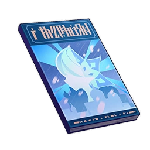

Snezhnaya · Books & Literature
A Brief History of the Pale Starborn
A one-volume Snezhnayan history, believed in-game to have been written by fae elders, recounting the Pale Star War and the early rule of Tsaritsa Anastasya Feodorovna.

Book record and authorship
A Brief History of the Pale Starborn is a one-volume Snezhnayan book collection available from Dhabit at Mimisbrunnr Books in Nasha Town, Nod-Krai. The in-game description identifies it as a history of the fae and says that details have led readers to believe it was written by fae elders. The writer is not named, so that attribution remains a belief within the book’s own world.
The title can suggest a story about beings born from stars, but the volume’s stated subject and historical narrative concern the fae, the Pale Star court, and political change in Snezhnaya. Its title is not evidence for a separate race of celestial visitors.
The 428th Cycle and the Pale Star War
The first dated section is set in the 428th Cycle. It opens by placing its events 76 years after Emperor Monomakh Snezhnyi raised the imperial capital on frozen ground. Monomakh’s envoys persuade the Vila to stop paying tribute to King Miscislav, ruler of the Volkodlak and head of an alliance of fae clans.
In the sixth year of the cycle, Miscislav accuses the Pale Star court of violating a peace agreement and demands an enormous ten-year payment in grain, gold, and enslaved labor. Monomakh refuses. The book presents the dispute as the start of a war shaped by rival power and fear of the Pale Star court’s growing influence, not as a conflict caused by a supernatural starfall.
Monomakh becomes the Belyi Tsar
The book describes several campaigns involving Miscislav’s alliance and Monomakh’s forces. Its footnotes name commanders, clans, shifting loyalties, and military decisions; those notes are part of the account’s later editorial presentation and should be read with the same care as the main narrative.
After Miscislav is defeated, Monomakh declares himself heir to the Pale Star and protector of all fae. The remaining clans seek an audience with him, and he takes the title Belyi Tsar. The book records that title and his political authority; by itself, it does not explain every later source’s use of the title or settle all questions about Monomakh’s nature.
Anastasya Feodorovna and the 799th Cycle
The second historical section jumps to the first year of the 799th Cycle. It says that Anastasya Feodorovna is crowned Tsaritsa of all Snezhnaya in the fourth month, after Monomakh has died. Several fae princes do not travel to Snezhnograd to meet her, and the Dalegrad clan breaks its ties with the capital.
The annals describe Anastasya’s response over the next years. The Fatui campaign against territories that resist her authority; some hereditary rulers lose their titles and are replaced by officials. The book also records the building of the Glupov fortress near Snezhnograd, the founding of the Snezhnograd Veche with Ioanna Ivanovna as its first chair, and an imperial reform order that changes the status of the aristocracy.
How to read its dates and claims
The book gives dates in its own Cycle calendar. It does not convert those dates into the present-day year count used elsewhere in Teyvat, so a precise conversion should not be presented as if it were printed in the volume. Its 428th- and 799th-Cycle sections are separated in the book’s chronology, but that alone does not establish a universal calendar calculation.
This is an in-world historical text with a fae perspective, specialized terminology, and extensive footnotes. It is an important record for Monomakh, Miscislav, the Pale Star court, and Anastasya’s consolidation of Snezhnaya, while leaving room to compare its claims with other books, quests, and present-day dialogue.
Cultural and historical significance
The volume links old fae politics to institutions still relevant in Snezhnaya. It places the Fatui’s founding within Anastasya’s consolidation of power, shows how the court changes its relationship with hereditary rulers, and records the creation of a civic council. It also preserves names and political structures that are otherwise difficult to encounter in the main story.
Its value comes from that specific historical record. It does not provide a complete history of every fae people or a full explanation of Snezhnaya’s current government, and its in-world perspective should remain visible whenever its events are summarized.
This is an original CoreGG reading guide, not an official HoYoverse article or a reproduction of the game text. Source links below identify the records used so you can check the original context.
Sources & references
Check these sources for the original game text and reference trail.